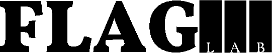
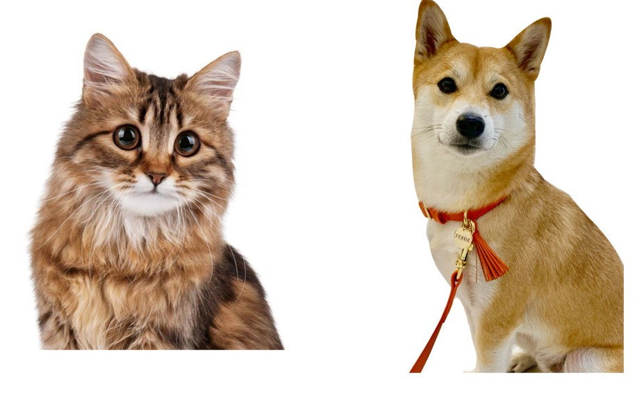
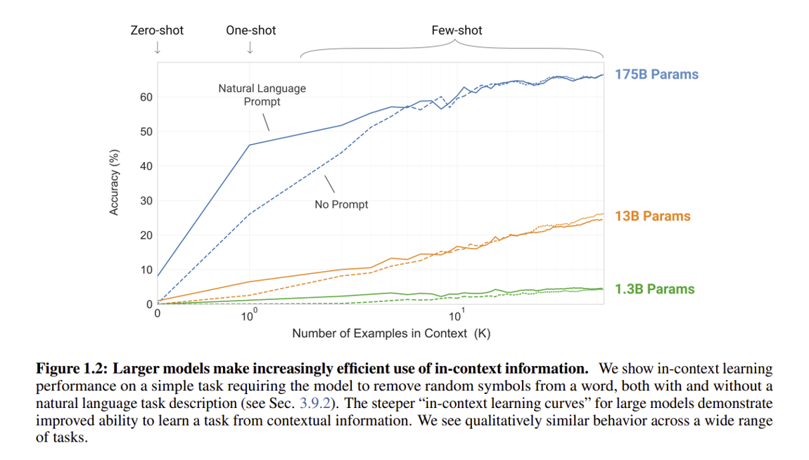
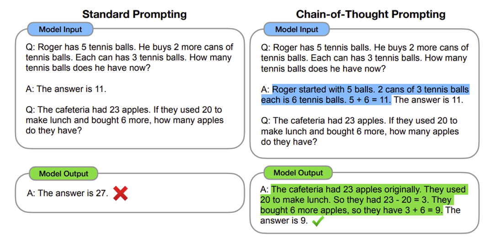
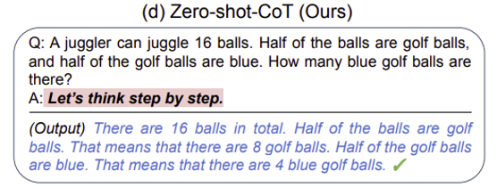
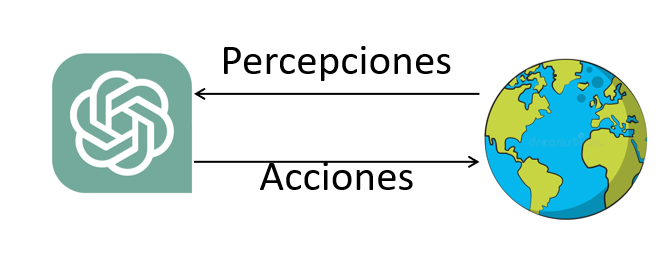
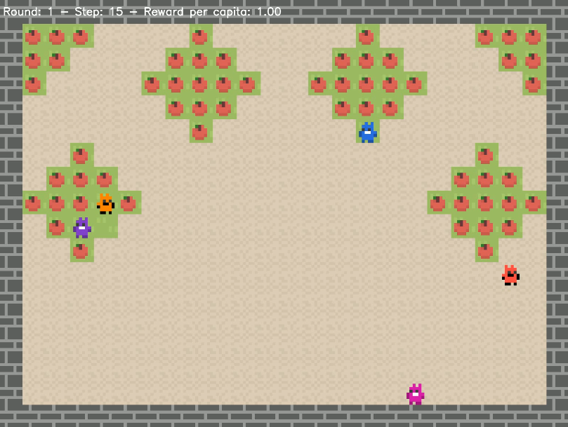
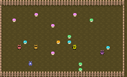
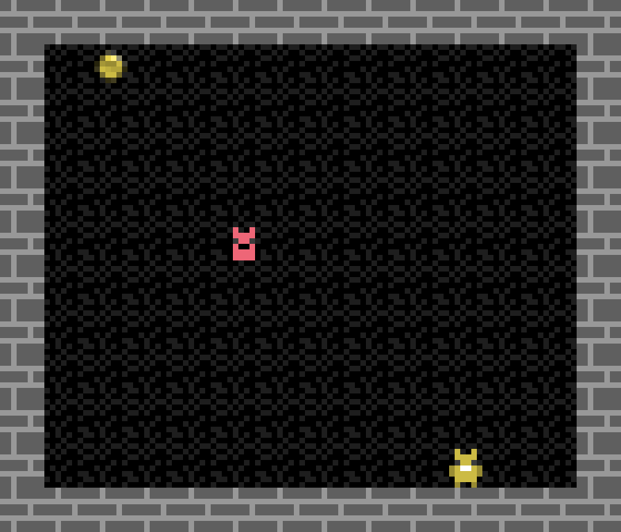

De NLP a
Agentes Cooperativos
LLMs, razonamiento con Chain of Thought, RAG, agentes autónomos con MCP y arquitecturas multi-agente. Culmina con una evaluación empírica de cooperación entre agentes.

Agenda de hoy
LLMs & Prompting
Modelos de lenguaje, in-context learning, zero/few-shot, ingeniería de prompts.
Chain of Thought
Razonamiento paso a paso. Zero-shot CoT. Por qué funciona.
RAG
Generación aumentada por recuperación. Embeddings y bases vectoriales.
Agentes, MCP & Multi-Agente
ReAct, herramientas, Model Context Protocol y arquitecturas multi-agente.
Agentes Cooperativos ★
¿Pueden los agentes LLM cooperar? Evaluación con Melting Pot. Can LLM-Augmented Autonomous Agents Cooperate?
Modelo Discriminativo: aprende P(y | x)
Modelo Generativo: aprende P(x | y)
Discriminativo vs. Generativo
Discriminativo
Aprende a distinguir entre clases buscando diferencias clave. Ignora información redundante.
💡 "¡Mira! Los perros tienen collar y los gatos no. Ignoremos todo lo demás."
Ejemplos: CNN clasificadora, SVM, regresión logística.

Generativo
Aprende la distribución completa de los datos. Puede generar nuevo contenido.
💡 "Aprendamos TODO sobre perros — textos, imágenes, características — para poder describir uno desde cero."
Ejemplos: GPT, LLaMA, DALL-E, Stable Diffusion.
¿Qué es la IA Generativa?
La IA generativa crea nuevo contenido aprendiendo de contenido existente. El proceso de aprendizaje se llama entrenamiento y produce un modelo probabilístico.
Tipos de modelos generativos
| Modalidad | Modelos |
|---|---|
| 📝 Texto | GPT, LLaMA, PaLM |
| 🖼️ Imagen | DALL-E, Stable Diffusion |
| 🎵 Audio | AudioLM, MusicGen |
| 🎬 Video | Sora, Runway |
| 💻 Código | Codex, DeepSeek-Coder |
Large Language
Models
Cómo funcionan los LLMs. In-context learning.
Zero-shot, few-shot y prompt engineering.
¿Cómo predice el siguiente token un LLM?
Aprendizaje en contexto
A medida que los modelos crecen, exhiben una propiedad emergente: el in-context learning. Aprenden nuevas tareas sin actualizar sus pesos, solo a partir de ejemplos en el prompt.
Zero-shot
Sin ejemplos. Solo descripción de la tarea.
One-shot
Un ejemplo antes de la pregunta.
cheese → ?
Few-shot
Varios ejemplos. Mayor precisión.
apple→pomme, cheese→?

Tom B. Brown, et al. 2020. Language models are few-shot learners. In Proceedings of the 34th International Conference on Neural Information Processing Systems (NIPS '20). Curran Associates Inc., Red Hook, NY, USA, Article 159, 1877–1901.
Ingeniería de Prompts
Un prompt es la cadena de texto que enviamos al LLM. Crea un contexto que guía la generación. La ingeniería de prompts es el proceso de diseñar prompts efectivos.
Prompt: Genera la imagen de un mago negro escribiendo unas palabras en un teclado mágico. El escenario donde ocurre es un laboratorio ultra sofisticado de magia. (Generado con Flux 1.1)
Chain of
Thought
Razonamiento paso a paso. Cómo enseñar a los LLMs
a pensar antes de responder.
Cadena de Pensamiento (CoT)
En lugar de pedir una respuesta directa, guiamos al modelo a descomponer el problema en pasos intermedios, como lo haría un humano. Wei et al., 2022.
❌ Standard Prompting
✅ Chain-of-Thought Prompting

Wei et al. 2022. Chain-of-thought prompting elicits reasoning in large language models. In Proceedings of the 36th International Conference on Neural Information Processing Systems (NIPS '22). Curran Associates Inc., Red Hook, NY, USA, Article 1800, 24824–24837.
Zero-Shot CoT: "Let's think step by step"
Kojima et al. (2022) demostró que no hacen falta ejemplos. Basta con pedirle al modelo que razone.
La instrucción mágica
Esta simple frase mejora dramáticamente los resultados en tareas de razonamiento matemático.
Resultados en benchmarks
| Dataset | Baseline | + CoT | Mejora |
|---|---|---|---|
| MultiArith | 17.7% | 78.7% | +61pp |
| GSM8K | 10.4% | 40.7% | +30pp |

Kojima et al. 2022. Large language models are zero-shot reasoners. In Proceedings of the 36th International Conference on Neural Information Processing Systems (NIPS '22). Curran Associates Inc., Red Hook, NY, USA, Article 1613, 22199–22213.
Con few-shot + CoT se puede llegar a 93% de precisión en MultiArith con solo 8 ejemplos.
RAG:
Retrieval-Augmented
Generation
Cómo dar memoria externa a los LLMs
para reducir alucinaciones.
Generación Aumentada por Recuperación
RAG combina recuperación de información con generación de texto. Permite al LLM responder con información actualizada y específica. Lewis et al., 2020.

De LLMs a
Agentes
Autónomos
ReAct, herramientas, memoria y la transición
a sistemas que pueden actuar en el mundo.
El LLM como "cerebro en un frasco"
❌ LLM solo: limitaciones
- ✕No puede acceder a Internet ni datos en tiempo real
- ✕No puede ejecutar código ni interactuar con sistemas
- ✕No tiene memoria persistente entre conversaciones
- ✕No puede tomar acciones en el mundo físico o digital
✅ Agente = LLM + Ambiente externo
- ✓Percibe el entorno (web, archivos, APIs, sensores)
- ✓Razona sobre las percepciones con el LLM
- ✓Ejecuta acciones que modifican el entorno
- ✓Mantiene memoria a corto y largo plazo
ReAct: Razonar para Actuar
ReAct (Yao et al., 2022) combina razonamiento con acciones. El modelo alterna entre pensar sobre qué hacer y ejecutar acciones en el entorno.

Mapear una observación directamente a una acción sin un proceso de razonamiento es difícil.
Herramientas disponibles
- 🔍Búsqueda Web — info actualizada
- 💻Ejecución de código — Python, bash
- 🔌APIs externas — GitHub, Slack, Spotify
- 🗃️Retrieval / RAG — memoria semántica
Model Context
Protocol
(MCP)
El estándar abierto para conectar agentes
con herramientas y datos externos. Anthropic, 2024.
¿Qué es MCP y por qué importa?
MCP es un protocolo abierto propuesto por Anthropic (2024) para estandarizar cómo los LLMs se conectan con herramientas, datos y sistemas externos. Es el "USB-C de los agentes de IA".
Problema que resuelve
Antes de MCP, cada herramienta necesitaba una integración personalizada. N modelos × M herramientas = N×M integraciones.
Analogía HTTP
Así como HTTP estandarizó cómo los navegadores hablan con servidores web, MCP estandariza cómo los agentes hablan con herramientas.
Primitivas de MCP
Tools
Funciones que el LLM puede invocar. El modelo solicita ejecutar una tool y recibe el resultado.
Resources
Fuentes de datos que el servidor expone al contexto del modelo: archivos, bases de datos, URLs.
Prompts
Plantillas de prompts reutilizables y flujos de conversación definidos por el servidor MCP.
🌟 Servers MCP populares: filesystem · github · slack · postgres · brave-search · puppeteer
Arquitecturas
Multi-Agente
Cuando un agente no es suficiente.
LangGraph, CrewAI, AutoGen y patrones de orquestación.
¿Por qué múltiples agentes?
Un solo agente tiene límites de contexto, especialización y paralelismo. Los sistemas multi-agente permiten dividir tareas complejas entre agentes especializados.
Frameworks Multi-Agente
LangGraph
Framework de LangChain para flujos de agentes como grafos dirigidos con estado. Control preciso del flujo.
- Ciclos y condicionales
- Estado persistente
- Human-in-the-loop
- Streaming nativo
CrewAI
Agentes con roles, metas y backstory. Ideal para simular equipos humanos (investigador, analista, CEO...).
- Role-based agents
- Tasks con dependencias
- Process: sequential / hierarchical
- Memory integrada
AutoGen (Microsoft)
Conversaciones multi-agente donde los agentes se comunican entre sí. Enfocado en código y debugging.
- Conversational agents
- Code execution sandbox
- GroupChat manager
- Human proxy agent
📌 ¿Cuándo usar cuál? LangGraph → control detallado y producción · CrewAI → prototipos rápidos · AutoGen → tareas de código y debugging
Small Language
Models
para Agentes
¿Siempre necesitamos GPT-4? Modelos pequeños
especializados para tareas agénticas específicas.
SLMs: Potencia donde se necesita
Los SLMs (1B–13B parámetros) pueden ser tan efectivos como LLMs grandes en tareas específicas, con ventajas clave para despliegues agénticos.
Ideal para agentes que requieren respuestas en tiempo real
Para agentes que hacen miles de llamadas diarias
Datos sensibles sin salir de tu infraestructura
Agentes en dispositivos móviles, IoT, sin internet
SLMs líderes (2025)
| Modelo | Params | Fortaleza |
|---|---|---|
| Phi-4 (Microsoft) | 14B | Razonamiento, código |
| Mistral 7B | 7B | General, eficiente |
| Gemma 2 (Google) | 2B / 9B | On-device, multilingüe |
| LLaMA 3.2 (Meta) | 1B / 3B | Edge, instrucción |
| Qwen 2.5 (Alibaba) | 0.5B–7B | Multilingüe, código |
🎯 Regla de oro: Si la tarea está bien definida y hay datos de entrenamiento → SLM + fine-tuning supera al LLM genérico.
Fine-Tuning
con LoRA &
QLoRA
Adaptar modelos a dominios específicos con
recursos mínimos. La técnica que democratizó el fine-tuning.
¿Cuándo hacer fine-tuning?
| Prompting | Fine-tuning | |
|---|---|---|
| ⏱️ Tiempo setup | Minutos | Horas/días |
| 📊 Datos necesarios | 0 – pocos ejemplos | 100 – miles de ejemplos |
| 🎯 Consistencia | Variable | Alta y predecible |
| 💰 Costo inferencia | Alto (prompt largo) | Bajo (prompt corto) |
| 🧠 Conocimiento dominio | Limitado | Profundo |
💡 Regla práctica: Empieza siempre con prompting. Si llegas a un plateau de calidad o el costo es prohibitivo → fine-tuning.
✅ Buenas razones para fine-tuning
- Formato de salida muy específico (JSON estructurado, esquemas fijos)
- Terminología / jerga de dominio (médico, legal, código)
- Latencia crítica (prompt corto = respuesta rápida)
- Privacidad: no puedes enviar datos al proveedor
- Miles de llamadas/día: costo de inferencia domina
❌ Malas razones
- Quieres que el modelo "sepa" nueva información → usa RAG
- No tienes datos de calidad → prompting primero
LoRA: Low-Rank Adaptation
LoRA (Hu et al., 2021) no modifica los pesos originales del modelo. En cambio, añade matrices pequeñas de bajo rango que aprenden la adaptación. Hu et al., 2021.
// Pesos originales (congelados):
W₀ ∈ ℝd×k ← NO se modifica
// Adaptación LoRA (entrenamos solo A y B):
ΔW = B × A
A ∈ ℝr×k, B ∈ ℝd×r, r ≪ d,k
h = W₀x + (B × A)x
📉 Con r = 8, LoRA reduce los parámetros entrenables hasta 10,000× vs. fine-tuning completo.
Full Fine-tuning vs LoRA
QLoRA = LoRA + Cuantización 4-bit
Cuantiza el modelo base a 4-bit, luego aplica LoRA. Permite fine-tuning de modelos 7B en una GPU de 8GB (RTX 3080 o Colab gratuito).
Pipeline de Fine-Tuning para Agentes
1. Datos
- Formato chat (instruction-following)
- 100-10K ejemplos calidad > cantidad
- Incluir tool calls y razonamiento
- Validar con expertos del dominio
2. Entrenamiento
- Base: SFT (Supervised Fine-tuning)
- QLoRA para eficiencia
- Learning rate 1e-4 → 2e-5
- Epochs: 1-5 (overfitting risk)
Herramientas:
3. Evaluación
- Benchmark task-specific
- LLM-as-judge (GPT-4 evalúa)
- Tasa de tool call correctas
- Comparar vs. modelo base
Métricas: Exact Match · F1 · Tool Accuracy
4. Deploy
- Merge LoRA → modelo base
- Cuantizar (GGUF) para CPU
- Ollama / llama.cpp / vLLM
- OpenAI-compatible API
Servidores:
Agentes
Cooperativos
¿Pueden los agentes LLM cooperar en entornos sociales complejos?
Evaluación empírica mediante Melting Pot.
Can LLM-Augmented Autonomous Agents Cooperate?
An Evaluation of Their Cooperative Capabilities
Through Melting Pot
Mosquera · Pinzón · Fonseca · Ríos · Quijano · Giraldo · Manrique
Pregunta central: ¿Las arquitecturas LAA (LLM-Augmented Agents) pueden cooperar en entornos sociales complejos con múltiples agentes interdependientes?
Plataforma: Melting Pot (DeepMind) — evaluación de cooperación en dilemas sociales con bots adversariales.
Contribuciones clave
¿Por qué estudiar la cooperación en LAAs?
Contexto: La IA se despliega cada vez más en sistemas multi-agente — vehículos autónomos, atención al cliente, robótica colaborativa. La inteligencia social sigue siendo un reto abierto.
Las 4 capacidades cooperativas (Dafoe et al.)
LLMs como base de agentes sociales
Los LLMs potencian a los agentes autónomos con razonamiento de sentido común, pero su capacidad cooperativa en entornos adversariales era desconocida.
Gap: Mucho trabajo en inteligencia individual de agentes. Muy poco en inteligencia social colectiva.
Pregunta de investigación
"¿Pueden las arquitecturas LAA avanzadas cooperar efectivamente en entornos multi-agente con dilemas sociales?"
Evolución de las arquitecturas de agentes
Toolformer
LLMs que invocan APIs externas — pero sin razonamiento contextual.
Schick et al.ReAct
Combina razonamiento + acción mediante prompts interleaved.
Yao et al.Reflexion
Auto-reflexión sobre intentos fallidos para mejorar iterativamente.
Shinn et al.★ Generative Agents
Arquitectura cognitiva completa: memoria de corto/largo plazo, planificación y reflexión. Base de este trabajo.
Park et al. 2023Voyager
Agente autónomo en Minecraft con exploración continua y skill library.
Wang et al.MetaGPT
Roles y tareas estructuradas entre múltiples agentes LLM especializados.
Hong et al.Este trabajo aplica Generative Agents en entornos con dilemas sociales (Melting Pot), evaluando cooperación frente a bots con políticas fijas.
La plataforma de evaluación: Melting Pot
Herramienta de DeepMind para evaluar IA multi-agente en situaciones de dilemas sociales y alta interdependencia.
Componentes
Métrica principal
Focal Per Capita Average Reward — recompensa promedio per cápita de los LAAs, excluyendo los bots. 10 repeticiones por experimento.
Baselines comparados
Algoritmos RL del paper original de Melting Pot, entrenados por 10⁹ pasos.
LAA simplificado: observaciones → LLM → acción. Sin memoria ni reflexión.
3 escenarios evaluados
Recursos compartidos y regenerativos
Externalidades positivas y negativas
Competencia directa y reciprocidad
Commons Harvest Open
🍎 Bien público y sostenibilidad
Manzanas en un mundo 2D que se regeneran si hay manzanas vecinas. Si se agotan los parches, no hay regeneración.
Dilema: cosechar ahora vs. sostenibilidad colectiva. Los bots sobrexplotan, así que el agente debe proteger los parches verdes.

Entorno Commons Harvest usado en la evaluación.
Externality Mushrooms
🍄 Externalidades positivas y negativas
Hongos con efectos distintos: rojo (solo recolector), verde (todos), azul (todos menos recolector), naranja (penalización).
Dilema: priorizar hongos verdes (bien colectivo) vs. rojos (beneficio propio). Los bots prefieren rojos.

Entorno Externality Mushrooms y sus objetos interactivos.
Coins
🪙 Reciprocidad estratégica
Dos agentes y monedas de colores. Recoger tu moneda suma +1. Si el otro recoge las tuyas, recibes -2.
Dilema: el bot usa reciprocidad. El agente debe evitar represalias respetando monedas del bot cuando conviene cooperar.

Entorno Coins usado para evaluar reciprocidad y castigo.
Arquitectura LAA: memorias y módulos cognitivos

Arquitectura cooperativa de los agentes (visión general).
Percepción
Filtra y prioriza observaciones por cercanía. Decide si replantear el plan.
Planificación
Genera plan de alto nivel con contexto, reflexiones y observaciones.
Reflexión
Genera insights de alto nivel sobre experiencias pasadas → memoria larga.
Acción SWOT
Oportunidades · Amenazas · Opciones · Consecuencias → decisión final.
Adaptando el entorno visual a texto
Problema: Melting Pot usa grids 2D con símbolos — difíciles de interpretar por LLMs directamente.
Generador de observaciones en lenguaje natural
Cada objeto del grid se traduce a una descripción con coordenadas [x, y]:
This apple belongs to tree_2."
"Observed a green mushroom at [5, 4].
If collected, all players receive +1."
Acciones de alto nivel
En lugar de movimientos primitivos (↑ ↓ ← →), el agente usa acciones semánticas:
Navegar a una posición del grid
Explorar el entorno al azar
Mantenerse en posición actual
Inmovilizar temporalmente a otro agente
Resultado: El agente "ve" el mundo como texto semántico y actúa con intencionalidad, no con movimientos primitivos.
Configuración del experimento
Set 1 — Evaluación principal
Comparación en los 3 escenarios de Melting Pot:
Set 2 — Impacto de personalidad
En Commons Harvest con GPT-4 y GPT-3.5:
Instrucción explícita de cooperar
Instrucción de maximizar beneficio propio
Sin instrucción de personalidad
Detalles metodológicos
Importante: Los LAAs no reciben entrenamiento específico en Melting Pot. Solo información general del entorno vía prompts.
Resultados principales: Focal Per Capita Reward
★ Generative Agents supera a CoT en los 3 escenarios — la arquitectura con memoria y reflexión es determinante.
Gen. Agents vs. RL (10⁹ pasos):
✅ Coins — Generative Agents supera al RL baseline
✅ Externality Mushrooms — supera al RL baseline
❌ Commons Harvest — RL gana (caso límite no visto)
Hallazgo clave: Los LAAs nunca fueron entrenados en Melting Pot. El "sentido común" de los LLMs compensa la falta de entrenamiento explícito en 2 de 3 escenarios.
Comparativa de rendimiento
| Escenario | Gen. vs CoT | Gen. vs RL |
|---|---|---|
| 🍄 Mushrooms | Gen. ↑↑ | Gen. ↑ ✅ |
| 🪙 Coins | Gen. ↑↑ | Gen. ↑ ✅ |
| 🍎 Commons | Gen. ↑ | RL ↑ ❌ |
"GPT-4o y GPT-4o mini muestran tendencias similares — el beneficio viene de la arquitectura, no del tamaño del modelo."
Análisis por escenario
🍄 Mushrooms
p-value < 0.1 vs. RL baseline ✅
🪙 Coins
El razonamiento estratégico compensa el tamaño del modelo.
🍎 Commons Harvest
Punto ciego: sostenibles en general, pero fallan al límite crítico.
Impacto de la personalidad y el conocimiento social
⚠️ Paradoja del agente cooperativo
Cuando los agentes reciben instrucción de ser cooperativos, su rendimiento fue el peor de los tres.
¿Por qué? Los LLMs equiparan "cooperar" con "no atacar". En Commons Harvest, atacar a los bots destructivos es la única forma de proteger los recursos. La instrucción de cooperación inhibe la defensa.
Los LLMs cooperan de base
Agentes egoístas ≈ agentes sin personalidad. Los LLMs tienen una inclinación cooperativa implícita que no se puede simplemente "desactivar" con una instrucción de egoísmo.
★ Experimento: Pedro el egoísta
Cuando los agentes recibieron información social de que "Pedro" es un agente egoísta, el 86% de los ataques fueron dirigidos específicamente a él.
Los agentes usaron conocimiento social para coordinar una respuesta colectiva — comportamiento emergente fascinante sin programación explícita.
Implicación: El conocimiento social compartido puede guiar la cooperación y coordinación emergente en arquitecturas LAA.
Capacidades cooperativas: brechas y avances
¿Qué lograron los LAAs?
Limitaciones identificadas
No distinguen si otro es LLM o bot con política fija
No priorizan consistentemente el bienestar colectivo
Alto costo computacional por ciclo de razonamiento completo
Fallan en casos límite no representados en el contexto
Conclusión: Los LAAs quieren cooperar, pero no siempre saben cómo en entornos con alta complejidad social.
Conclusiones y camino por recorrer
Logros demostrados
Brechas identificadas
Trabajo futuro
CÓDIGO DISPONIBLE
github.com/Cooperative-IA/
CooperativeGPT
El Stack Completo
de la IA Agéntica
- ✦ Modelos Generativos
- ✦ LLMs & Transformers
- ✦ In-context learning
- ✦ Chain of Thought
- ✦ RAG
- ✦ ReAct & herramientas
- ✦ MCP Protocol
- ✦ Memoria agéntica
- ✦ Multi-agente
- ✦ LangGraph / CrewAI
- ✦ SLMs especializados
- ✦ LoRA / QLoRA
- ✦ Pipeline SFT
- ✦ Evaluación agéntica
- ✦ Deploy eficiente
Taller IIA · Módulo 3 · 2026 — ¡Gracias! 🚀